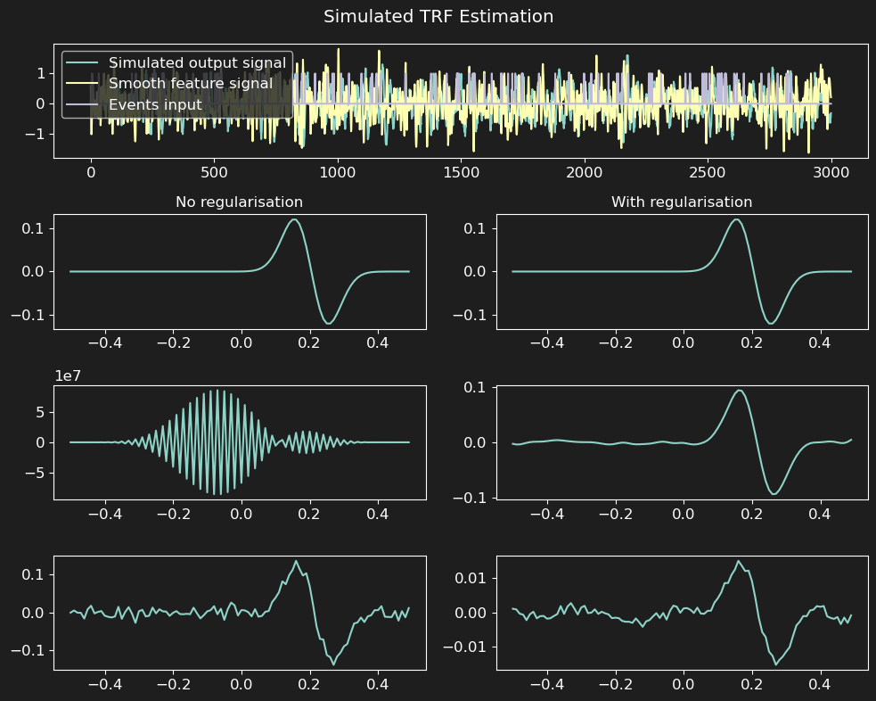

Usage
First of all, while the package is still undergoing development and changes, the top-level namespace is
pyeeg. This will change in the future to natmeeg.
So to import the package, you can do:
import pyeeg
# or
from pyeeg import io, models
# etc
A simple TRF example
from pyeeg import TRFEstimator
import numpy as np
import matplotlib.pyplot as plt
from scipy.signal import convolve, filtfilt, butter
# Parameters
fs = 100 # Sampling frequency
duration = 30 # Duration in seconds
n_samples = int(fs * duration) # Number of samples
tmin = -0.5
tmax = 0.5
t_kernel = np.arange(tmin, tmax, 1/fs) # Time vector for kernel
n_events = 100 # Number of events
# Simulated data
# TRF kernel
peak_time = 0.2 # Time of the peak in seconds (seconds)
width = 0.05 # Width of the Gaussian kernel (seconds)
kernel = np.diff(np.r_[0.0, np.exp(-(t_kernel - peak_time)**2 / (2 * width**2))]) # Gaussian kernel derivative
# Stimuli (smooth continuous one + event based one)
smooth_stimulus = np.random.randn(n_samples,) # Random stimulus
b, a = butter(4, 15, 'low', fs=fs) # Low-pass filter (15 Hz)
smooth_stimulus = filtfilt(b, a, smooth_stimulus) # Filtered stimulus
event_stimulus = np.zeros((n_samples,)) # Event-based stimulus
onsets = np.random.randint(0, n_samples - 1, size=n_events) # Random event onsets
event_stimulus[onsets] = 1 # Set event onsets to 1
# Convolve stimuli with kernel
y_smooth = convolve(smooth_stimulus, kernel, mode='same') # Convolve with smooth stimulus
y_event = convolve(event_stimulus, kernel, mode='same') # Convolve with event stimulus
# Add noise
y = y_smooth + y_event + np.random.randn(n_samples) * 0.1 # Add noise to the signal
# Create TRF estimator
trf = TRFEstimator(tmin=tmin, tmax=tmax, srate=fs, alpha=1.0)
print(np.c_[smooth_stimulus, event_stimulus].shape, y.shape) # 2 features, 1 channel
trf.fit(np.c_[smooth_stimulus, event_stimulus], y[:, None])
print(trf)
# Plot results
f, ax = plt.subplots(4, 2, figsize=(12, 8), sharey='row')
gs = ax[0, 0].get_gridspec()
for a in ax[0, :]: a.remove()
ax_wide = f.add_subplot(gs[0, :])
ax_wide.plot(y, label='Simulated output signal')
ax_wide.plot(smooth_stimulus, label='Smooth feature signal')
ax_wide.plot(event_stimulus, label='Events input')
ax_wide.legend()
# Plot estimated kernels and result
alphas = [0., 1e3] # Regularisation parameters
for k, aax in enumerate(ax[1:, :].T):
trf.alpha = alphas[k] # Set regularisation parameter
trf.fit(np.c_[smooth_stimulus, event_stimulus], y[:, None])
aax[0].plot(t_kernel, kernel, label='Kernel')
trf.plot(ax=aax[1:], show=False)
if k==0:
aax[0].set_title('No regularisation')
else:
aax[0].set_title('With regularisation')
f.suptitle('Simulated TRF Estimation')
f.tight_layout()
plt.show()
This will show a figure in the line of:
{kind=link}